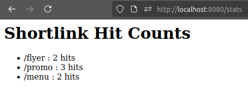
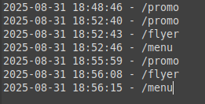

Tracking QR Code Engagement with a Lightweight URL Shortener
Problem
Many small businesses use QR codes on flyers, product packaging, etc., but most have no way of knowing if people are actually scanning them. Existing analytics tools are often overkill or too expensive for small operations.
Solution
I built a lightweight URL shortener in Lua that:
- Creates unique shortlinks for each QR code (e.g. /promo, /flyer, /menu).
- Redirects visitors to the real destination page.
- Logs each hit into a text file for later analysis.
- Provides a /stats page to view engagement counts.
This means that, for example, a café owner could put one QR on flyers around town, put another on posters inside the shop, put another (again) on menus, and then he can check which ones actually drive visits.
We'll use Luasocket as a server running locally on port 8080, log on a plain text file (hits.log), and take qrencode for QR generation.
The flow goes like this:
Customer scans QR -> Shortlink server -> Logs hit -> Redirects to real page
Here's a snippet for the mapping table:
return {
["/promo"] = "https://example.com/",
["/flyer"] = "https://example.net/",
["/menu"] = "https://example.org/",
}


With this setup, a small business won't need to pay for Google Analytics or any complicated marketing dashboards, he/she can answer where customers come from by only running it on a cheap VPS or even a Raspberry Pi.
At the time of this writing, this project is still just a local experiment that is at least obvious enough to solve a real-world pain point. It can absolutely be upgraded by storing stats in SQLite instead of plain logs, add a nicer web dashboard with charts, or automatically generate QR codes for new links.